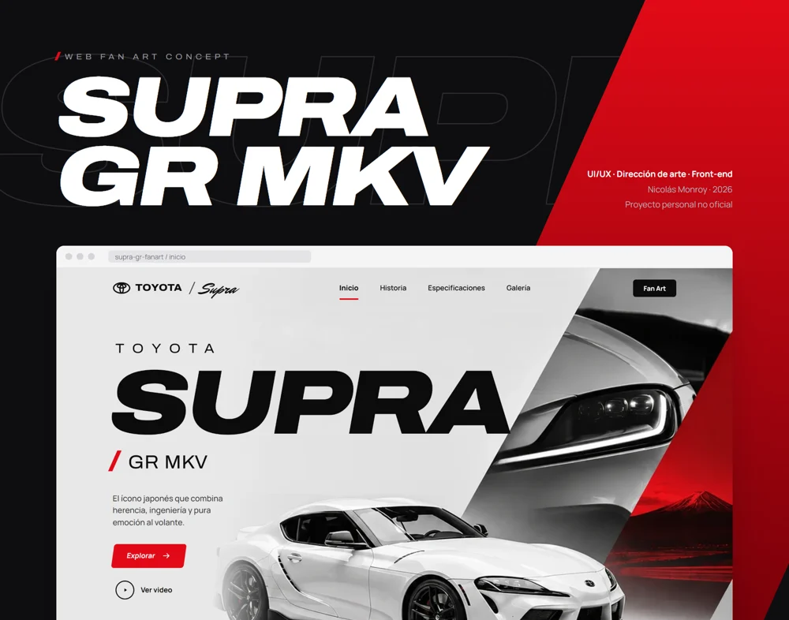
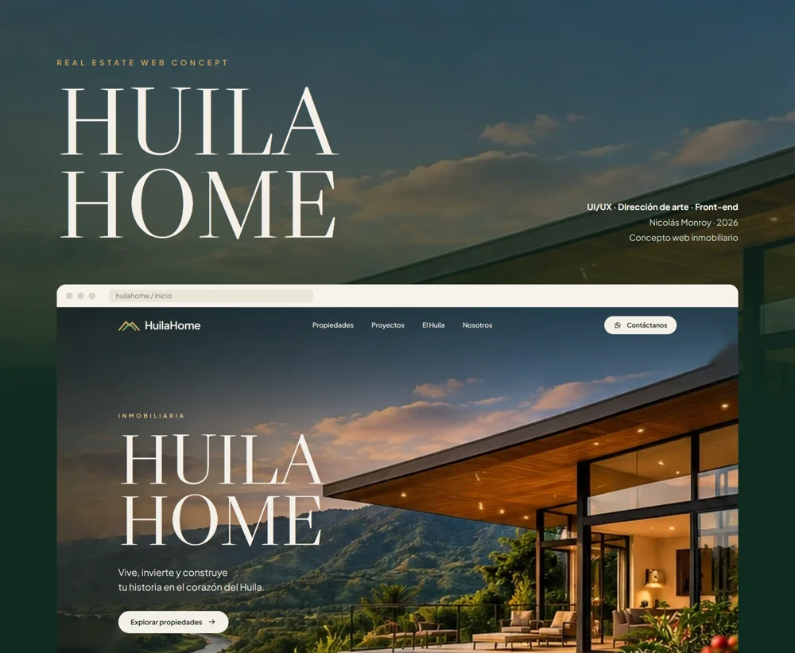
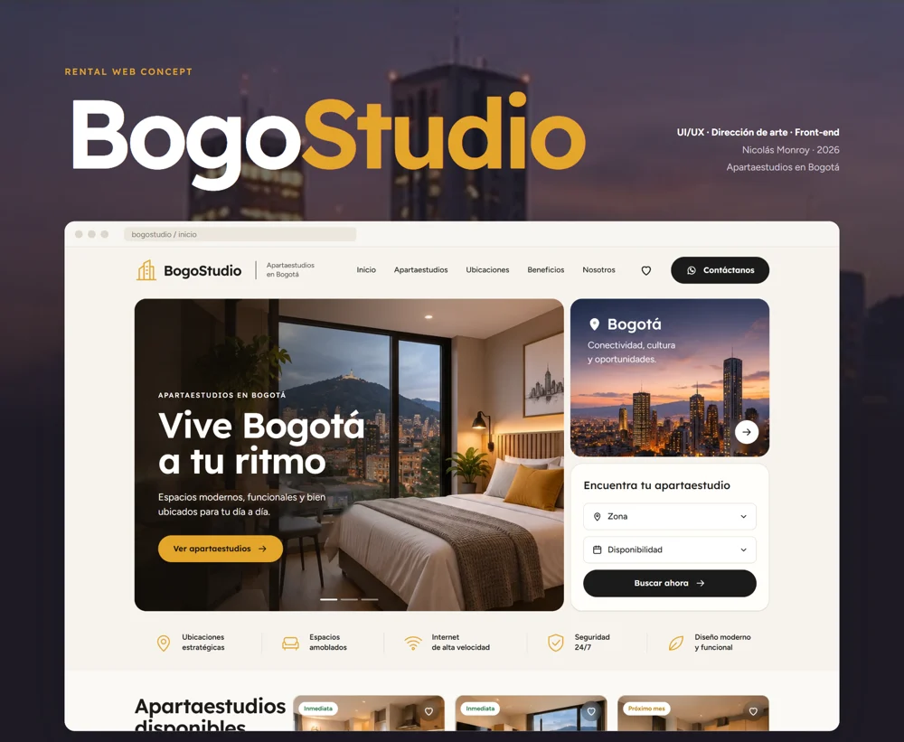
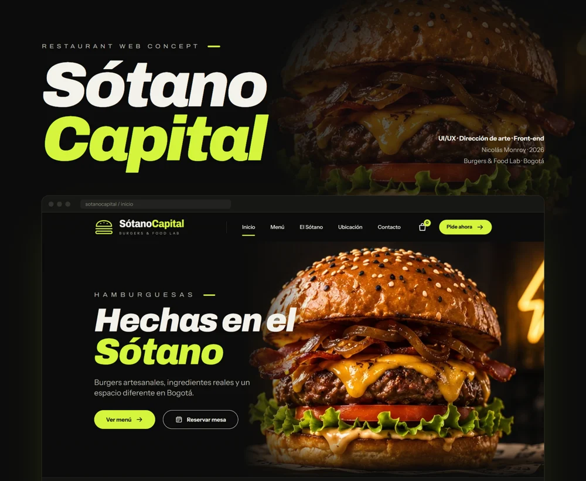

CH
COMMANDHUB PRO
Tiempo real · <20 ms
CREATIVE TECHNOLOGIST
& SYSTEMS ARCHITECT
Diseño marcas, páginas web y experiencias digitales desde Bogotá para toda Colombia y clientes internacionales. Combino dirección de arte, desarrollo full stack y automatización.
DESLIZA · EL CAMINO COMIENZA
CAP. 01 · 分野
CAP. 02 · 力
Cifras reales de los sistemas que he diseñado y construido.
CAP. 03 · 作品

Fan art · Web · Dirección de arte

Inmobiliaria · UI/UX · Web

Arriendos · UI/UX · Web

Restaurante · Branding · Web
Tiempo real · <20 ms
Compras · 82.355 archivos
Proveedores · IA multimodal
Comunicación · −85% circulares
Desempeño · 67 roles
IA en GPU local · $0
Despacho documental
Sistema de identidad
CAP. 04 · 道
Contexto, reto y oportunidad.
Estrategia y enfoque.
Concepto, identidad y experiencia.
Implementación y automatización.
Medición, iteración y crecimiento.
CAP. 05 · 技
Diseño y desarrollo para marcas y equipos de Colombia y del exterior. Trabajo remoto con alcance, entregables y etapas definidos.
CAP. 06 · 実験
IA local, automatización y herramientas que nacen de un problema real.
Contenido con modelos de IA corriendo en local.
Python · Ollama · PlaywrightControl del PC desde el celular por debajo de 20 ms.
React Native · WebSocketsSincronización automática con Google Drive.
Python · Drive API · SQLiteSegundo cerebro en Obsidian con módulos conectados.
Obsidian · MarkdownCAP. 07 · 経験
Comunicador Social (UNIMINUTO, 2020) que evolucionó a la ingeniería de sistemas y producto.
Publicista y arquitecto de sistemas internos: automatización operativa, compras, auditoría de nómina, comunicación interna y portal de proveedores.
Product Designer: producto digital, estrategia visual y comunicación de alto alcance.
Marketing Coordinator: mercadeo, activación de marca y material comercial B2B y B2C.
Campañas retail, identidad corporativa, branding gastronómico y dirección visual turística.
CAP. 08 · 粋
Soy Nicolás Monroy, Creative Technologist y Systems Architect en Bogotá (GMT-5). Vengo de la Comunicación Social y hoy integro dirección de arte editorial y brutalista con ingeniería full stack e IA local: desde una identidad de marca hasta un sistema SaaS que audita 501 nóminas sin errores.